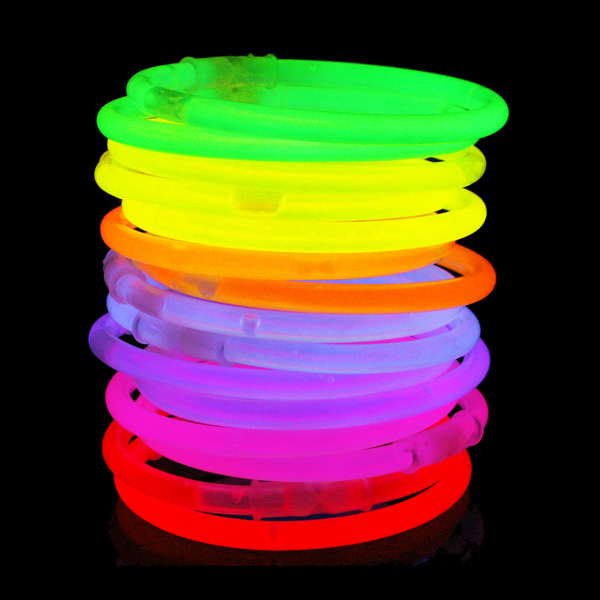
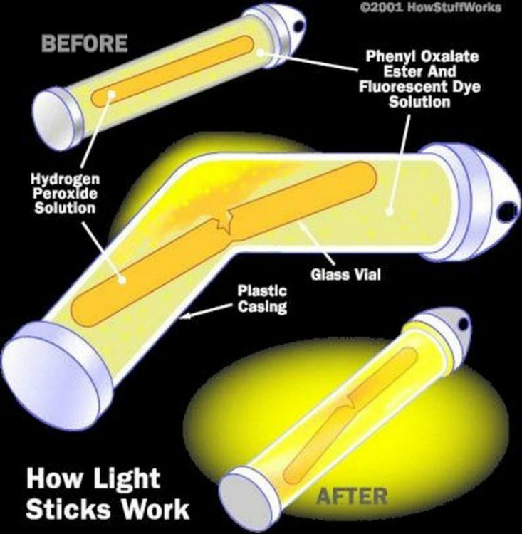
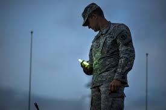
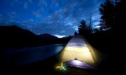
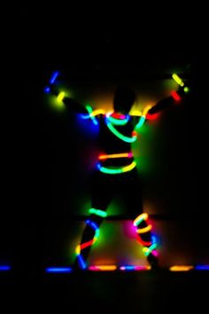

Table of contents:
A glow stick is an item consisting of a plastic tube which contains two chemicals that combine when the tube bends. When the two chemicals meet it produces a luminescent glow.
A glow stick gets its light from a process called chemiluminescence which is similar to how a firefly lights up. The glow stick was created because scientists wished to duplicate the light produced by a firefly and in the 1970s. The first glow stick was based on chemical work by Edwin Chandross at Bell Labs. Around the same time the U.S. Navy was also inventing a glow stick type of device and received one of the first patents in 1973. Inventors kept working on the device and in 1974 Herbert Richter and Ruth Tedrick received a patent for their chemiluminescent light device.
A glow stick contains two nontoxic chemicals which is a base catalyst, and a suitable dye like a sensitizer, or fluorophor (a type of chemical). The chemicals inside the plastic tube are a mixture of the dye, the base catalyst, and a chemical called diphenyl oxalate while the chemical in the glass vial is hydrogen peroxide. When the glow stick is bent the glass tube breaks and causes a reaction. The reaction when the two chemicals mix lights the glow stick.
By adjusting the concentrations of the two chemicals, manufacturers can produce glow sticks that of two types.
Types of dyes or fluorophor:
Glow sticks are waterproof, require no batteries, and are disposable and inexpensive. There are three main uses for glow sticks:
The military uses glow sticks because they are a light that doesn’t produce heat and light markers. They are common in emergency kits for a quick light source.
They are used during camping because there is no electricity. They are common in emergency kits for a quick light source.
Glowsticking is the use of glow sticks in dancing which is used in parties, concerts and dance clubs. They also are used by marching band conductors for evening performances. Glow sticks are also used as toys. It glows brightly so it is visible at night warns motorists and cars, and its luminous markings help parents to keep track of their children. In addition to this, they are used to create special effects in low light photography and film.
In glow sticks, phenol is produced as a byproduct. If it comes in contact with skin, it is corrosive and poisonous and can cause irritation and vomiting in some people. Wash all areas of the body that come in contact with the chemical and keep all chemicals out of the eyes and mouth. It is advisable to keep the mixture away from skin and to prevent accidental ingestion if the glow stick case splits or breaks. Glow sticks contain ingredients that act as a plasticizer which means that if a glow stick leaks onto anything plastic it can liquefy it.
There are many places where you can buy glow sticks.
Return to the top.
By Prachi